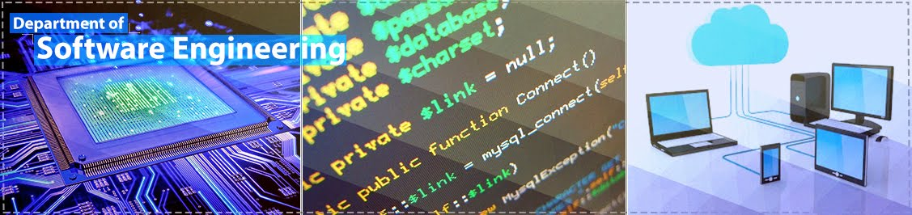

Description:
The Department of Software Engineering (DSWE) is one of the pillars of the Faculty of Engineering at Koya University. The DSWE was founded in the academic year 2004/2005 due to the university's keenness to meet the accelerating needs of the community in various fields and for the development and management of programs necessary to meet the needs of users. Software Engineering is a vital and important nowadays as it provides the community with Software Engineers that are able to take their responsibilities in various areas of software engineering field.
The DSWE believes that the student is the most important pillar in the university, so it is always trying to take care of the aimed ideas; also it contributes to the refinement of all the professional skills needed to provide employment opportunities for students, whether locally or regionally.

Department Vision:
The vision of the DSWE is to build the student's personality from several aspects in an integrated manner to be a distinct graduate of this department at all levels and has a scientific and professional ability which qualifies him for success in his career as a software engineer to serve the country.
Department Mission:
The mission statement of the Software Engineering at Koya University can be summarized as to Preparing students for professional practice and graduate study through a program that provides a strong fundamental technical and high quality undergraduate education.
Learning outcomes:
Graduates of the program are expected to demonstrate:
- an ability to apply knowledge of mathematics, science, and engineering.
- an ability to design and conduct experiments, as well as to analyze and interpret data.
- an ability to function on multi-disciplinary teams.
- an ability to identify, formulate, and solve engineering problems.
- an understanding of professional and ethical responsibility.
- an ability to communicate effectively.
- the broad education necessary to understand the impact of engineering solutions in a global, economic, environmental, and societal context.
- a recognition of the need for, and an ability to engage in, life-long learning.
- an ability to use the techniques, skills, and modern engineering tools necessary for engineering practice.
- the ability to analyze, design, verify, validate, implement, apply, and maintain software systems.
- the ability to work in one or more significant application domains.
General Skills
- An ability to understand the concept of programming, besides, many programming software tools.
- An ability to understand methods to structuring data and information, and designing and developing programs and applications for such structuring.
- An ability to build host based and web based systems for organizing data and information, which supporting managers and decision makers in enterprises.
- An ability to understand the concept of data communication, computer networking, and security of networks and systems.
- an ability to understand the fundamental of electrical and logic circuits.
- An ability to understand the roles of software engineering in the Artificial Intelligent systems.
Analytical Skills
- The ability to cover a wide range of technologies and environment.
- The ability to understand a code behavior through the skill of reading codes and reforming codes.
- The ability to write and design methods that describe a specific behavior on (input / output) and how suit them with precondition and post-condition of the desired environments.
- The ability to determine the pre-actions and post actions of a code that designed for doing a specific functionality, specially at high level structure of coding.
- An awareness about software development life cycle, using library and frameworks, debugging, and use of integrated development environments.
- The ability of software configuration and testing.
Communication Skill
- Flowchart and pseudo code communication during building a software.
- Writing technical report and presentation.
- Verbal communication.
- writing and presenting lab works, projects, assignments, researches precisely.
- Ability to present researches in the form of poster presentation.
- Ability to communicate through groups and making video conferences.
Reading and Research Skill
Being able to read effectively means software developer can understand and do researching on a specific issue. Students in Software Engineering department will get below experiences in this direction:
- They become selective and set targets during reading process so that targets and objectives for their project and research clearly described and formulated.
- Students will learn to Put keywords prior searching and to look for these words during browsing library and online databases.
- Student will learn where to read to get the relevant references for their projects and researches.
- Induction given to learn about library systems and reading process.
Language:
The language of education at the DSWE is the English language for all courses, except the Kurdish Studies course where the language of study is the Kurdish language.
Study methods:
The DSWE following the year-study system. The method of study depends on lectures, reports and laboratory/practical sessions, in addition to compulsory internship program with the related industries, e.g. the internship program with petroleum companies for the student of the Petroleum engineering. The assessment is achieved via two mid-term exams, final exams, essays and reports.
Duration:
The duration of study at the DSWE is 4 Academic years full-time study. Normally an academic year starts in Mid Sept to Mid June of the next year.
Program Course Modules taught at the Department:
The following link provide a full list of Course Modules provided at this department. Each course has a standard course module code which is hyper-linked to its dedicated website for full details information on that particular course. Please note that on each course modules website you will also directed to Academic Profile of the lecturer providing the course.
Course Modules taught at DSWE
DSWE Links 2018-2019
Academic Staff:
- Mr. Peshawa Jammal MuhammadAli(Head of DSWE)
- Prof. Dr. Salah Ismaeel Yahya(Director of UniversityDQA & CD
)
- Assist. Prof. Dr. Yazen Adnan Khalil
- Dr. Abdulbasit Kamil Faeq
- Dr. Akar Hawree Taher
- Dr. Azhin Tahir Sabir
- Dr. Halgurd Sarhang Maghdid
- Dr. Rasber Dhahir Rashid
- Dr. Saman Mirza Abdullah
- Dr. Soran Sabah Hussein
- Mr. Ari Arif Abdulrahman
- Mr. Sherko Rahman HamaSalih
- Mr. Bawar Abid Abdalla
- Ms. Caroline Yousif Daniel
- Mr. Darwn Ramazan Ali
- Mr. Diar Faeq Majeed
- Mr. Hassan Mohammed Ali (Rapporteur of DSWE)
- Mr. Haval Abdulkarim Ahmed (Officer ofIT Unit
)
- Mr. Ladeh Sardar Abdulrahman
- Mr. Miran HamahSaeed Mohammed
- Mr. Rebaz Najeeb Ramadhan
- Mr. Safar Maghdid Asaad
- Mr. Saman Muhammad Omer
- Mr. Zhenar Shaho Faeq
- Mr. Shaduman Rahman Karim (Postgraduate Student)
Department's Contact Information
You can visit or communicate with our department via one of these methods,
Address:
Department of Software Engineering
Faculty of Engineering
Koya University
University Park
Danielle Mitterrand Boulevard
Kurdistan Region - F.R. Iraq
Tel/Mobile: +964 (0) 7701393453
Email: feng.dswe@koyauniversity.org
URL: feng.koyauniversity.org